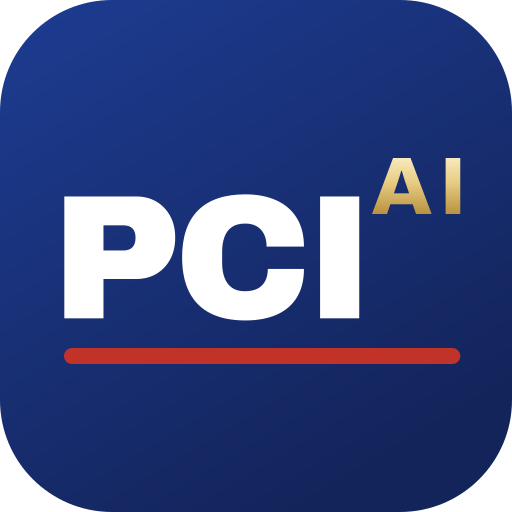

PCI AI
PROJECT CONTROLS INSTITUTE
THE DISCIPLINE
Every project
runs on numbers.
Planning · cost · forecasting · earned value · risk
WHAT CHANGED
Seconds to
produce.
Still yours
to defend.
AI can be confidently wrong
THE GOVERNING PRINCIPLE
AI proposes.
The professional
disposes.
THE INSTITUTE
Project Controls
Institute
An independent professional body for the integrated discipline
THE CREDENTIALS
PCL-AIProject Controls
PFL-AIProject Finance
PML-AIProject Management
One standard — with governed AI at its core, not bolted on
THE STANDARD
13 domains
· 61
knowledge areas
Scenario-based examination · weighted 40 / 40 / 20
OPEN BY DESIGN
Three years'
experience.
Any field.
No degree barrier · assessed on capability
WHERE WE STAND
Founding stage.
Not yet
accredited.
Developed with reference to ISO/IEC 17024 personnel-certification
principles · building toward formal accreditation · enrolment open, examinations forthcoming
PCI AI
"AI proposes. The professional disposes."
projectcontrolsinstitute.org
Project Controls Institute Global, Inc. · A Delaware Non-Stock
Corporation. Intends to seek 501(c)(3) recognition; not yet granted. Not accredited by
ANAB, IAS or any ISO/IEC 17024 accreditation body.